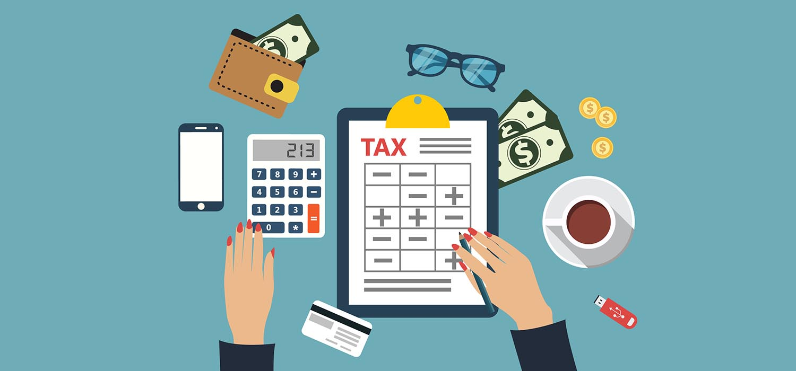

Vamos conhecer um pouco mais sobre o que é patrimônio?
Patrimônio, tanto no âmbito legal quanto econômico, se refere ao conjunto de bens, direitos e obrigações que tem algum valor financeiro, seja para pessoas físicas, seja para empresas. Em outras palavras, é tudo o que alguém possui e deve.
Basicamente, o patrimônio é composto por duas partes: ativos e passivos. Os ativos dizem respeito ao que uma pessoa ou entidade tem em valores positivos (bens e direitos). Já os passivos representam a parte negativa (obrigações).
Ao contrário do que muitos pensam, o patrimônio é indivisível. Ou seja, você não pode ter mais de um. Por exemplo, se alguém conta com uma casa própria e um carro, eles não correspondem a dois patrimônios, mas sim a dois bens. No decorrer deste artigo, essas relações ficarão mais claras.
Vamos conhecer um pouco mais sobre os principais tipos de patrimônios?
Patrimônio bruto
é um sinônimo de ativo. Ou seja, é um cálculo que só leva em conta as partes positivas (bens e direitos), desconsiderando a parcela negativa, composta pelas obrigações.
Patrimônio líquido
é o valor real, uma vez que, além de considerar os ativos, ele leva em conta os passivos (obrigações). A esse cálculo de subtração (ativos menos passivos) damos o nome de equação patrimonial.
Patrimônio de afetação
É uma modalidade existente aqui no Brasil, mas que é de uso exclusivo das construtoras. Esse mecanismo é utilizado para que um empreendimento esteja totalmente separado dos bens e das dívidas da empresa que o está construindo.
Vamos conhecer um pouco mais sobre o que compõe o patrimônio?
Bens
É tudo aquilo que tem algum valor econômico e que, de alguma maneira, pode ser convertido em dinheiro. Os bens têm quatro subcategorias: tangíveis, intangíveis, móveis e imóveis.
Bens tangíveis
Também chamados de materiais, eles se referem a todos aqueles bens que podem ser tocados. Imóveis, veículos, terrenos e o próprio dinheiro são exemplos desse grupo.
Bens intangíveis
Ao contrário da modalidade anterior, os bens intangíveis ou imateriais são aqueles que não podem ser tocados, mas que, ainda assim, podem ser convertidos em dinheiro, como marcas, franquias, patentes, tecnologia, entre outros.

Bens móveis
Se refere a bens tangíveis que podem ser mudados de lugar sem comprometer qualquer tipo de estrutura. Ou seja, são ativos que não estão presos ao solo, como máquinas, equipamentos, dinheiro etc.
Bens imóveis
Equivale ao oposto dos bens móveis. Eles não podem ser trocados de local sem causar prejuízos ao solo. É o caso de construções e terrenos, por exemplo.
Direitos
São ativos que não são bens de nenhuma natureza, mas que, de forma indireta, podem render dinheiro para o indivíduo ou empresa. Por exemplo, ao fazer uma venda a prazo a um cliente, a organização não recebe o valor da negociação na hora, mas tem o direito de fazer a cobrança e ser gratificada no futuro.

Obrigações
Nem só de ativos se faz um patrimônio. As obrigações são todos aqueles compromissos que empresas e pessoas precisam arcar, como taxas, salários e bônus aos funcionários.